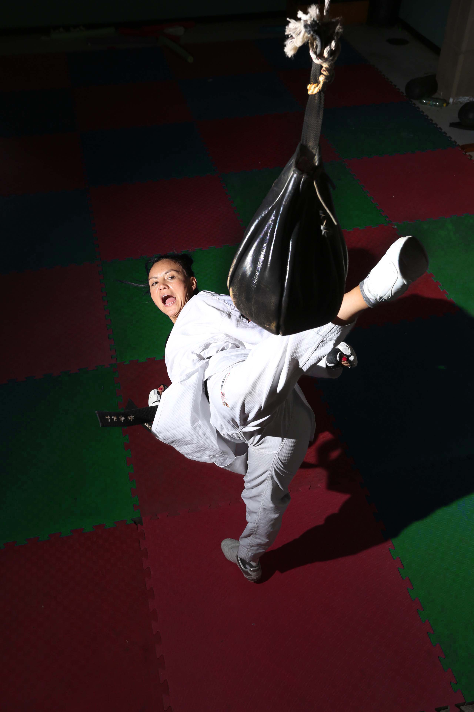
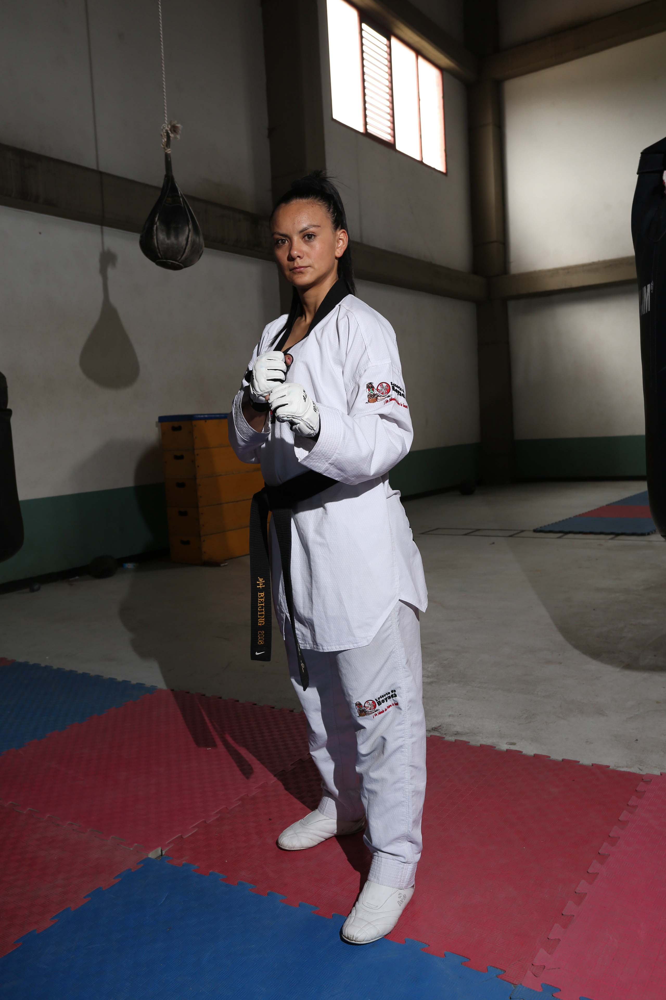
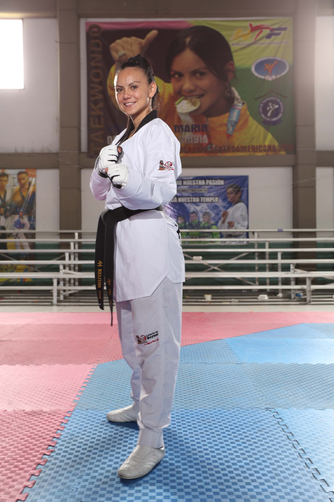

Doris "Xena" Patiño
DEPORTISTA LORERÍA DE BOYACÁ
EDAD: 30 AÑOS
CIUDAD: SOGAMOSO
- 20 de septiembre de 2001 Cinturón Blanco
- 23 de octubre de 2001 Cinturón Amarillo
- 01 de marzo de 2002 Cinturón Verde
- 07 de septiembre de 2002 Cinturón Azul
- 30 de octubre de 2003 Cinturón Rojo
- 15 de noviembre de 2003 Cinturón Rojo Franja
- 30 de noviembre de 2004: Cinturón Negro 1 Dan Federación Colombiana De Taekwondo.
- 05 de noviembre 2007 Cinturón Negro I Dan de la Federación Mundial de Taekwondo.
- 15 de Diciembre 2009 Cinturón Negro III DAN Federación colombiana de taekwondo.
- Cinturón Negro IIII DAN Federación colombiana de taekwondo.
- Juegos Olímpícos 2016 Categoría - 57 kg
Descripción:
Taekwondista boyacense que con un amplio recorrido en este deporte, nos enseña a perserverar y luchar por nuestros sueños. Llegar a lo más alto del podio es su meta diaria y su familia, su impulso a entrenar con más dedicación. Una orgullosa Deportista Lotería de Boyacá, ejemplo de delicadeza, fortaleza y tenacidad.

{kind=link}
{kind=link}
{kind=link}
{kind=link}